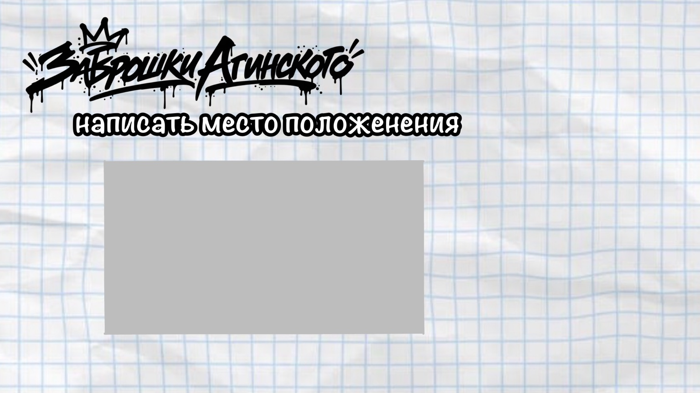
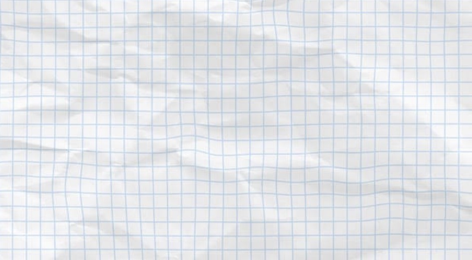

АРХИВ · 001НУЖНО ДОПОЛНИТЬ
▱＋
Место без названия
Добавь сюда описание, историю или свои наблюдения. Не публикуй точные входы и маршруты к опасным объектам.
АГИНСКОЕ / ЗАБРОШЕННЫЕ МЕСТА↗
НЕОФИЦИАЛЬНЫЙ АРХИВ ЗАБРОШЕННЫХ МЕСТ
Истории, заметки и визуальные находки из Агинского.
Собирай атмосферу места — не рискуя собой.
Кадры, фактуры и идеи, которые задают настроение проекта.

